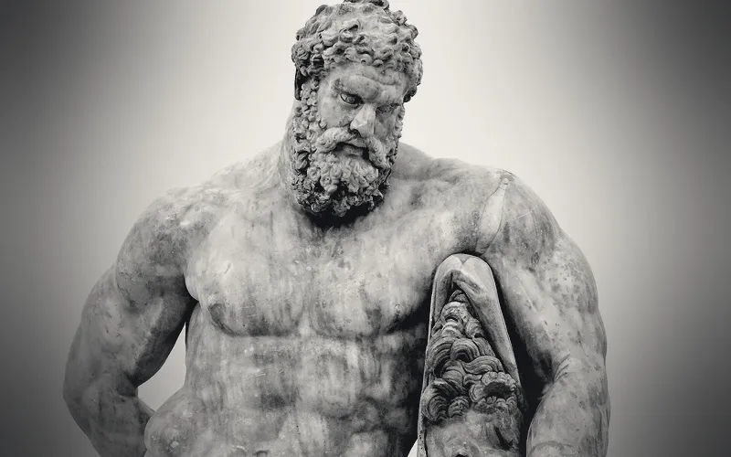

A espada sob a pedra
Egeu deixou uma espada e um par de sandálias debaixo de uma rocha. Quando o filho conseguisse erguê-la, deveria ir a Atenas. Teseu ergueu e foi por terra, vencendo bandidos pelo caminho.
Plutarco, Vida de Teseu HERÓI
HERÓI
Θησεύς
Filho de Etra e do rei Egeu, de Atenas (alguns dizem que de Poseidon). Limpou as estradas de bandidos, matou o Minotauro no Labirinto e se tornou o grande rei de Atenas.
Que nota você dá? Clique nos cerberinhos:
 1 ★
2 ★
3 ★
4 ★
5 ★
1 ★
2 ★
3 ★
4 ★
5 ★
Este eu conheci de perto. Desceu com o amigo Pirítoo para raptar a minha rainha. Hades os convidou a sentar, e eles não conseguiram mais levantar. Héracles soltou só Teseu.
Egeu deixou uma espada e um par de sandálias debaixo de uma rocha. Quando o filho conseguisse erguê-la, deveria ir a Atenas. Teseu ergueu e foi por terra, vencendo bandidos pelo caminho.
Plutarco, Vida de TeseuAtenas mandava a Creta sete rapazes e sete moças para o Minotauro. Teseu foi como um deles, entrou no Labirinto com o fio de Ariadne, matou o monstro e achou a saída.
Conhecer Cnossos →Teseu prometeu trocar as velas negras por brancas se voltasse vivo, mas esqueceu. Egeu viu o navio de luto, pensou que o filho tinha morrido e se jogou ao mar, que ganhou o seu nome.
Plutarco, Vida de Teseu“Ele prendeu a ponta do fio à porta e entrou, puxando-o atrás de si. Encontrou o Minotauro no fundo do Labirinto e o matou a socos.”
Apolodoro, Epítome (tradução livre)

Κνωσός
Cidade do rei Minos, em Creta, segundo Homero.

Ἀθῆναι
Cidade de Atena, que venceu Poseidon na disputa pela Ática.

Ἡρακλῆς
Filho de Zeus e Alcmena, cumpriu os doze trabalhos. No último, me levou do Submundo.